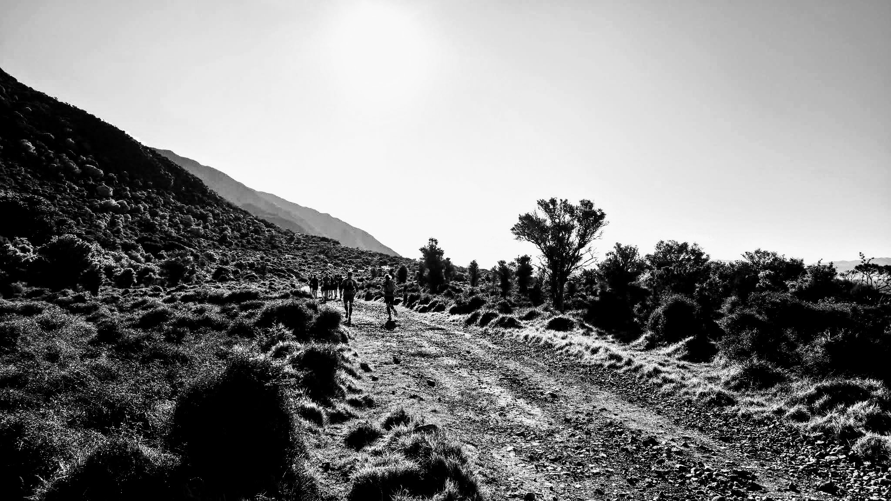

The Mukamuka Munter is a classic Wellington trail run tracing the ridgelines and valleys of the Remutaka Range. Starting from the Hutt Valley floor, the course climbs sharply into native bush before threading across open tops. No frills. Just trail.